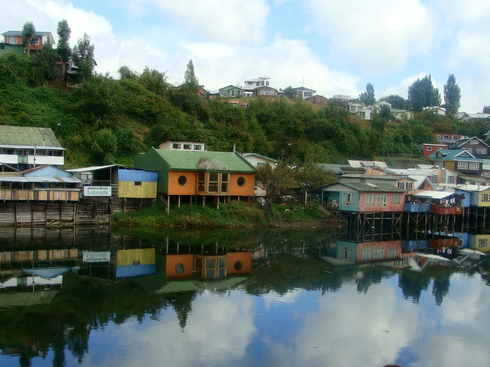
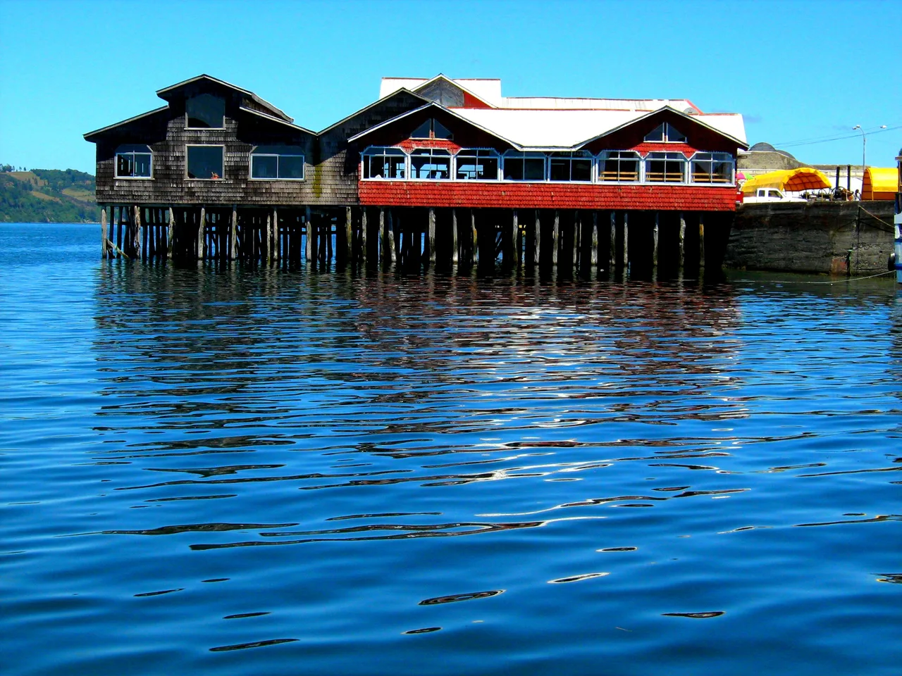

En las costas fangosas del Pacífico y en los archipiélagos brumosos del sur de Chile, los carpinteros de ribera clavan pilotes de madera nativa en el lodo marino para sostener casas que flotan cuando sube la marea. Una indagación sobre el palafito, la arquitectura anfibia y la sabiduría de habitar sin dominar el agua.
Toda la historia de la arquitectura monumental de Occidente puede leerse como un intento obsesivo por someter la fluidez de la naturaleza bajo el peso implacable de la piedra, del concreto armado y de los cimientos profundos. El canon vitruviano nos enseñó que una casa debe ser firme, estática, inamovible, anclada a la tierra seca con toneladas de mortero para demostrar que la voluntad del hombre es capaz de domesticar los elementos y mantenerse invulnerable frente a los caprichos del clima. Pero en las orillas brumosas del archipiélago de Chiloé, en el sur de Chile, y en las costas cenagosas del Pacífico colombiano, en Tumaco y Buenaventura, floreció desde hace siglos una forma de habitar completamente distinta que los arquitectos llaman arquitectura vernácula palafítica.

El habitante del palafito no pretende dominar el agua ni levantar diques para expulsarla: comprende que el agua es la dueña legítima del paisaje y diseña su vivienda para convivir con ella en un diálogo diario de pleamar y bajamar. Durante seis horas al día, cuando la luna atrae las aguas del océano y la marea alta inunda las caletas, el palafito se transforma en una embarcación quieta: el mar lame los pilotes de madera, los botes de pesca amarran directamente a la escalera del patio trasero y las olas rompen con un murmullo arrullador justo debajo del piso de tablas del dormitorio.
Seis horas más tarde, cuando el mar se retira lentamente hacia el horizonte en la bajamar, la casa revela su osamenta zancuda y el paisaje se convierte en una planicie inmensa de fango negro, piedras cubiertas de algas marinas y conchas de mariscos donde los niños bajan descalzos con pequeños rastrillos a recoger choros y almejas entre las raíces de madera que sostienen su hogar. Esta condición anfibia no es una precariedad transitoria: es una sabiduría ecológica insuperable que aprovecha el espacio intermareal —esa franja donde no se puede sembrar ni transitar en carreta— para fundar un territorio de libertad que no le debe tributo a los terratenientes de la tierra firme.
La construcción de un palafito es una obra maestra de botánica aplicada y carpintería de ribera. En Chiloé los artesanos no utilizan cualquier árbol del bosque: seleccionan en los montes húmedos las maderas que mejor resisten la salinidad del agua marina y el ataque implacable de los moluscos taladradores de la madera, como el ciprés de las Guaitecas, la luma o el pellín de roble para los pilotes enterrados en el lecho marino; y la madera liviana del alerce y del tepú para las vigas y las tejuelas de la cubierta.
En el Pacífico colombiano, por su parte, los carpinteros afrodescendientes e indígenas hunden en el lodo del manglar las varas rectas del mangle rojo y del mangle piñuelo, maderas sagradas que poseen la singular propiedad de petrificarse bajo el agua salada en lugar de pudrirse, volviéndose con el paso de las décadas tan duras como barras de hierro. Para clavar los pilotes no se usan martillos mecánicos: se utiliza la fuerza colectiva de la minga campesina, donde cuatro o seis hombres empujan el tronco rítmicamente al compás de cantos marineros hasta que la madera alcanza la roca firme del fondo.

Las paredes y los tejados de los palafitos de Chiloé están forrados con tejuelas de alerce recortadas a mano con hacha de aletilla. Cada tejuela se superpone a la inferior como las escamas de un pez, adoptando formas decorativas de media luna, trapecio o punta de flecha que van oxidándose con el tiempo desde un rubio dorado inicial hasta un gris plateado profundo que se funde con la neblina marina. Esa piel de madera no es impermeable en el sentido rígido de los plásticos industriales: respira con la humedad del ambiente, dilatándose con la lluvia para sellar las junturas y contrayéndose con los escasos días de sol para ventilar las maderas interiores.
En las últimas décadas, la voracidad del turismo inmobiliario y los planes de modernización costera han intentado barrer con los barrios palafíticos, calificándolos con arrogancia letrada como asentamientos informales insalubres que afean el borde marítimo de las ciudades. Han rellenado las caletas con escombros de concreto y han expulsado a las familias de pescadores hacia conjuntos habitacionales de ladrillo en lo alto de los cerros, donde los hombres se enferman de tristeza al no poder escuchar el agua debajo de su cama ni vigilar su bote desde la ventana de la cocina.
Pero en las caletas donde la comunidad supo organizarse y resistir, el palafito sigue en pie sobre sus patas de mangle y de roble. Y en ese balanceo sereno de la casa cuando la marea llena golpea las maderas y hace crujir las cuadernas en la oscuridad de la noche, late la más hermosa lección de la arquitectura popular: la certeza de que la verdadera fuerza del ser humano no radica en levantar fortalezas arrogantes contra el mundo, sino en aprender a doblarse con la marea para seguir flotando con dignidad sobre el abismo.
Fuentes.
- Guarda, Gabriel (1995). La tradición de la madera en Chiloé: Arquitectura y poblamiento insular. Universidad Católica.
- Mosquera, Gilma (2010). Arquitectura popular del Pacífico colombiano: Vivienda palafítica y hábitat anfibio. Universidad del Valle.
- Bachelard, Gaston (1942). El agua y los sueños: Ensayo sobre la imaginación de la materia. Fondo de Cultura Económica.
Investigación sobre arquitectura vernácula costera y modos de habitar anfibios en Sudamérica.
Fuentes consultadas el 19.11.2026. Análisis e interpretación: RUMMOR. Edición privada para revisión.